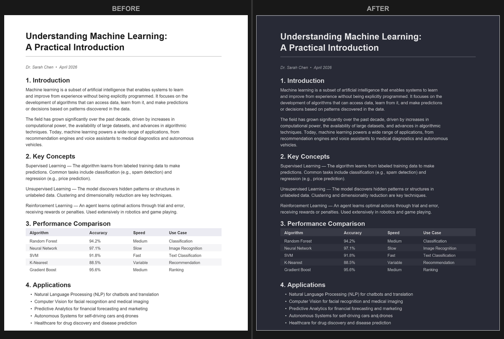

Modo Oscuro para PDF en Firefox: Cómo Leer Cómodamente
Firefox tiene un visor de PDF integrado bastante bueno, pero no incluye una opción de modo oscuro. Aunque tengas Firefox configurado con un tema oscuro, los PDF siguen apareciendo con su fondo blanco brillante original. Así es como puedes solucionarlo.
La solución rápida: convierte tu PDF
La forma más rápida de leer un PDF en modo oscuro en Firefox es convertirlo. Abre el Convertidor PDF Modo Oscuro, sube tu archivo y elige entre más de 16 temas como Dracula, Nord o Solarized. El PDF convertido se descarga automáticamente y se ve oscuro en cualquier visor donde lo abras.
El convertidor se ejecuta completamente en tu navegador. Tu archivo no se sube a ningún servidor, y la conversión normalmente termina en unos segundos incluso para documentos largos.

¿Puede ayudar about:config de Firefox?
Algunas guías sugieren modificar configuraciones de about:config para forzar colores oscuros en el contenido web. Aunque esto puede afectar a algunas páginas web, no cambia de forma fiable cómo se renderizan los PDF en el visor de Firefox. El visor de PDF dibuja las páginas en un canvas, que la mayoría de trucos de modo oscuro no pueden modificar.
Incluso cuando un ajuste de configuración funciona parcialmente, el resultado suele ser inconsistente. Las imágenes, gráficos y texto en color pueden verse extraños cuando se fuerzan a un esquema oscuro.
¿Qué hay de las extensiones de Firefox?
Las extensiones de modo oscuro diseñadas para navegación web (como Dark Reader) generalmente no afectan al visor de PDF de Firefox. El visor usa un pipeline de renderizado separado al que las extensiones no pueden acceder fácilmente.
Existen algunas extensiones específicas para PDF, pero suelen requerir permisos amplios y ofrecen opciones de temas limitadas. Convertir el archivo directamente te da más control sobre el aspecto y garantiza resultados consistentes.
Por qué convertir es el mejor enfoque
- El fondo oscuro queda incorporado en el PDF, así que se ve igual en todas partes.
- Puedes elegir exactamente el tono de oscuro que quieras entre más de 16 temas.
- Puedes ajustar la resolución y la calidad para adaptarlos a tus necesidades.
- El texto sigue siendo buscable y seleccionable en el archivo convertido.
El mismo método de conversión funciona en cualquier navegador. Si usas Chrome, consulta nuestra guía de modo oscuro para Chrome. Los usuarios de Edge encontrarán opciones adicionales en la guía de Microsoft Edge.
Pruébalo ahora: Abre el Convertidor PDF Modo Oscuro en Firefox, arrastra tu PDF y descarga una versión oscura en segundos. Gratis, privado, sin extensiones necesarias.
Preguntas Frecuentes
No, el visor de PDF integrado de Firefox no tiene opción de modo oscuro. Los PDF se muestran con sus colores originales independientemente del tema de Firefox.
Dark Reader generalmente no afecta a los PDF en Firefox porque el visor de PDF usa un pipeline de renderizado separado que las extensiones no pueden modificar fácilmente.
Usa el Convertidor PDF Modo Oscuro en Firefox para convertir tu PDF. El archivo convertido se descarga con los colores oscuros incorporados y funciona en cualquier visor.